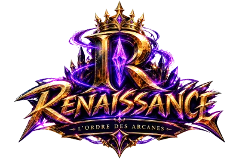
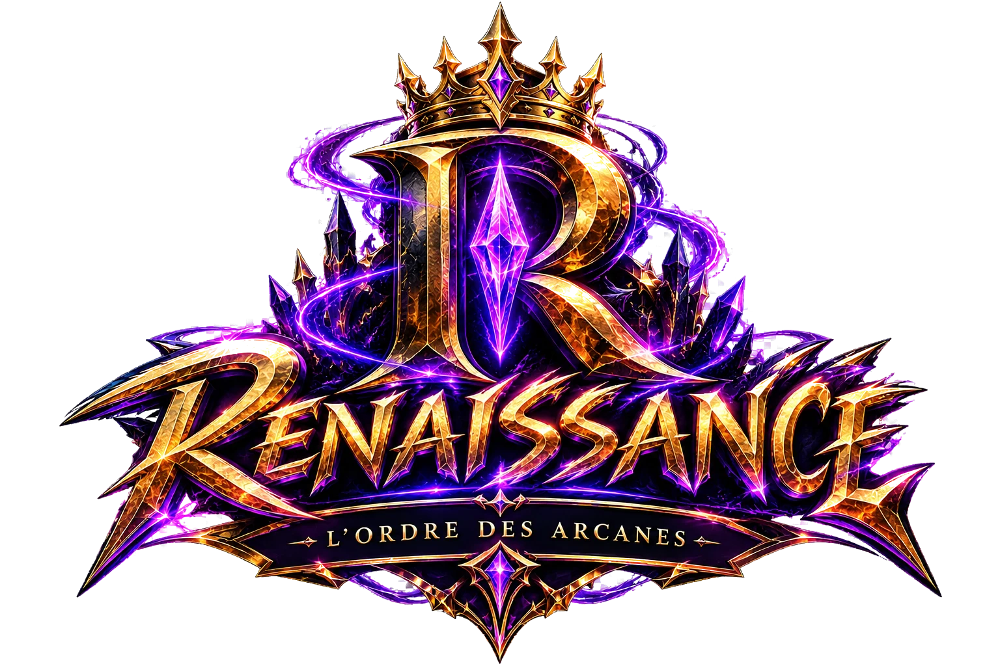
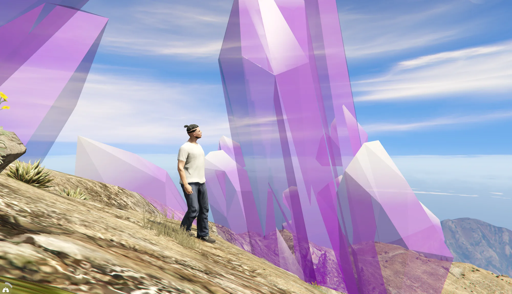

Au sud du Mur
Le Sud
Néons, commerces, voitures de luxe : l'illusion du rêve américain. La police y traque en silence les comportements « anormaux », et la nuit, la radio capte des fréquences que personne n'explique.
C'est ici que vous jouez

DiscordServeur FiveM · francophone

Plus qu'un jeu, une seconde vie.
Los Santos, aujourd'hui. Depuis que la terre s'est ouverte au-dessus du cratère de 1945, un mur coupe la ville en deux. Au sud, la vie continue. Au nord, la pierre brille encore.
Mont Chiliad · capture en jeu
01 — L'univers
Le 2 septembre 1945, à 23 h 12, un objet céleste s'écrase dans les montagnes de Blaine County. Au fond du cratère, des cristaux d'un violet éblouissant. L'armée boucle le site avant l'arrivée des secours.
Depuis, le comté vit avec ce secret. Certains l'ont étudié, d'autres en ont profité. Quelques-uns, sans le vouloir, en portent aujourd'hui la marque.

L'impact est classé secret militaire. Le site reçoit un nom de code : Projet Renaissance.
Sous la montagne, un complexe souterrain étudie la pierre. Des enfants sans famille servent de cobayes ; ceux qui ne survivent pas disparaissent des registres.
L'élite de la ville tire de la pierre le Sérum V-45. Le Directoire 1945, mené par Stan Cooper, ne vieillit plus. Ses autres membres : noms inconnus.
Un séisme de magnitude 6,8 rouvre la faille. Quatorze heures de noir total. Quelques semaines plus tard, le béton commence à couler.
02 — Le Mur
« Quarantaine biologique de niveau 4. » C'est tout ce que les autorités ont dit en 2022, en coupant le comté en deux.
Au sud du Mur
Néons, commerces, voitures de luxe : l'illusion du rêve américain. La police y traque en silence les comportements « anormaux », et la nuit, la radio capte des fréquences que personne n'explique.
C'est ici que vous jouez

Au nord du Mur
Pas de police, pas de loi. Des ruines, des portraits de disparus et, au sommet du Chiliad, la pierre qui continue de pousser.
Zone interdite
03 — Les Éveillés
Chez certains, l'exposition a réveillé des capacités hors du commun. Un don pour les uns, une menace pour le Directoire. Les pouvoirs sont rares : un seul de vos personnages peut en porter un.
La première saison se termine sur un choix. Ce sont les joueurs qui le feront.
Voie 01
Tout révéler. Le Mur tombe, le gouvernement aussi. La saison suivante s'ouvre sur une guerre civile.
Voie 02
Tout contrôler. Le chantage sur le Directoire donne les territoires et le marché noir.
Voie 03
Tout éveiller. Les artefacts libèrent l'anomalie, avec les responsabilités qui vont avec.
04 — Le serveur
Le feu des Éveillés, en trois niveaux. Un pouvoir par joueur, rare et convoité.
Police, ambulanciers, mécaniciens du Benny's et de LS Tuners, concessionnaires, entreprises tenues par les joueurs.
Téléphone et tablette, garages, coffres, stations-service, boutiques.
Banque, distributeurs, comptes d'entreprise et salaires des services publics.
Pêche, skateboard, lavage auto… et d'autres à venir.
Création complète, vêtements, carte d'identité et permis dans un vrai portefeuille.
05 — Rejoindre
Annonces, nouveautés et accès au serveur.
Le lanceur gratuit pour GTA V, sur fivem.net.
Créez votre personnage et entrez dans la ville.
discord.gg